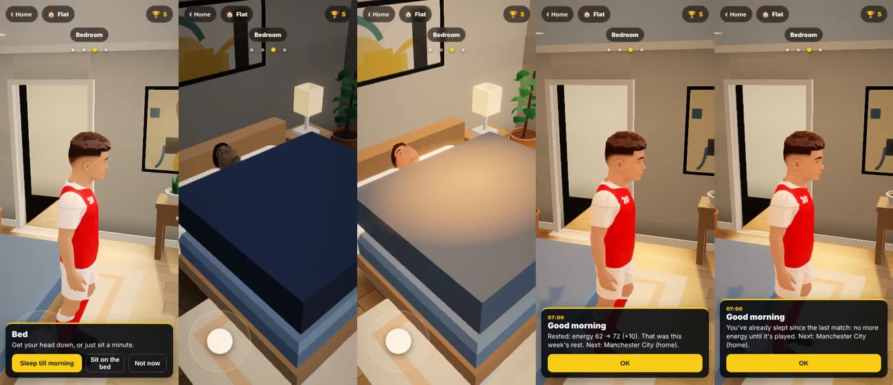
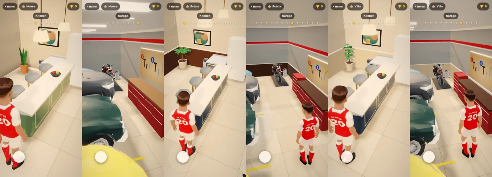
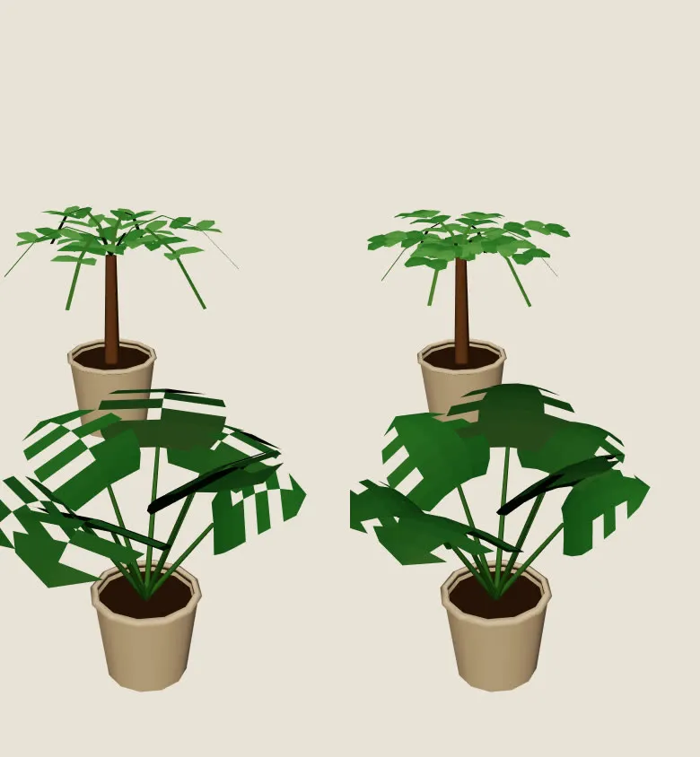
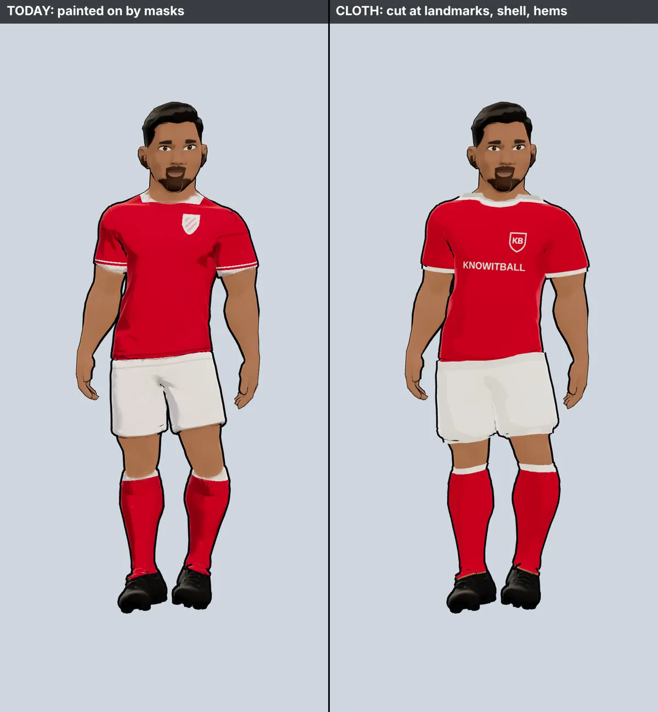
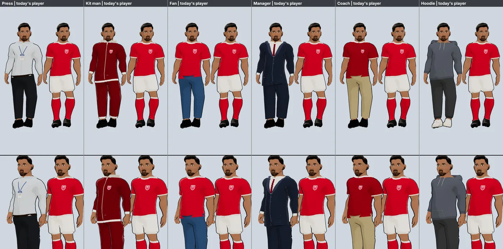
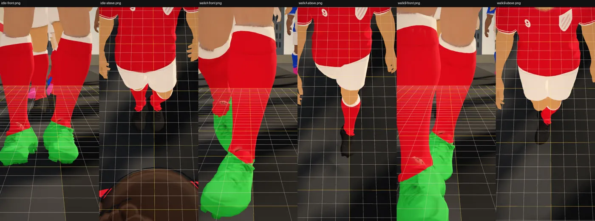
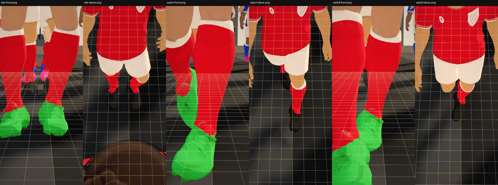
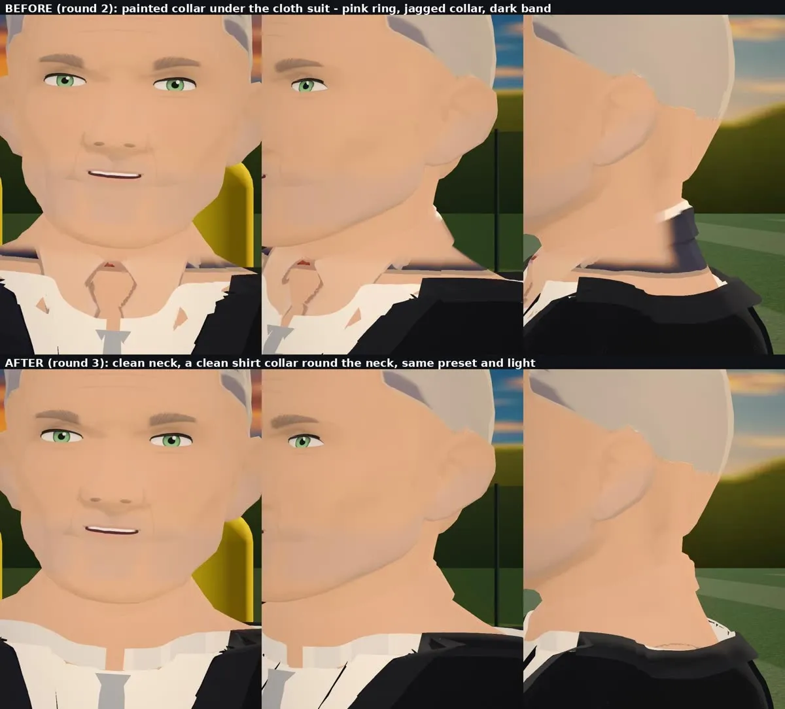
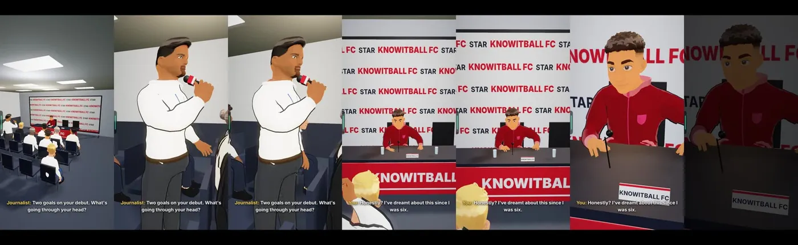
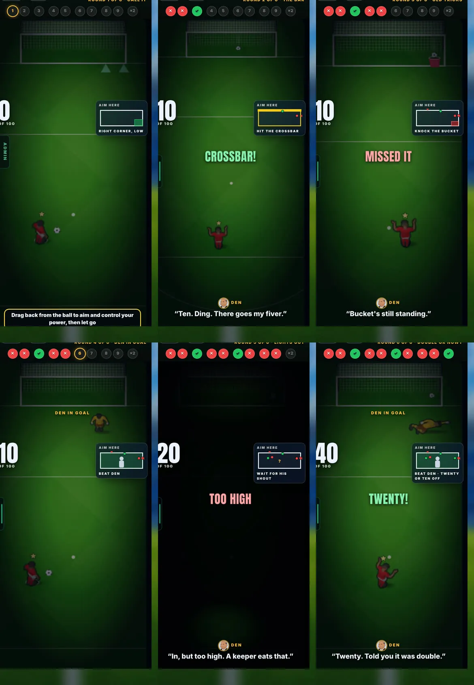

Sleep that rests you, houses that live, clothes made of cloth
Made by Harry · the night of 20 to 21 Nov 2026 · goes live with tonight's push · cut scenes, stories and the kit man drill stay on test pages
CHECK THESE ON YOUR PHONE
Both test pages open on the live site. The scene editor needs you signed in as the team. Nothing on them reaches a real career.
1 · SLEEPING IN YOUR HOUSE PASSES TIME
Go to bed, the night plays, you wake up rested. One night counts as the week's Rest.
⚽ Matchthe week starts
🛏 Sleep+10 energy, the night passes
🛏 Sleep againnothing: "you've already slept"
⚽ Next matcha new week
🛏 Sleep+10 again
One night's rest between two matches, same as Rest. The +10 is the real result seen on screen: energy 62 → 72.

Swipe sideways: the bed card, night, morning, "energy 62 → 72", and the second try refused.
ProblemThe bed in your house did nothing. Harry: "sleeping in the house should actually pass time".
WhyThe career has no clock between matches. It only has the week: the gap from one match to the next.
FixSleep = the week's Rest, once per gap. It never gives more than Rest and never moves a fixture.
2 · ALL SIX HOUSES ARE LIVED IN
Every house tier now has its rooms, things to use and team-mates who drop round. Each room opens from a high corner so you see it.

Swipe sideways: kitchens and garages in three houses. These were taken before the clothes change in point 3, so you are still in a kit here.
Every bed works
The flat's bed could not be used at all. Now every bed can.
Villa: a games room and a bath
Arcades, darts and table football, not an indoor pool. The bath is a "long soak" that skips time.
Plants with real leaves
In the houses, the 3D shop's brass pots and the test garden.
Morning sun across the bed
Night is lamps off and blue moonlight; morning is warm.

Left: before, striped leaves. Right: after.
3 · CLOTHES ARE CLOTH, NOT PAINT
Kits and clothes are now a real layer of cloth over the body, not colour painted on the skin.

Look at the sleeve ends and sock tops: clean straight edges on the right. You approved this kit.

Swipe sideways: press, kit man, fan, manager, coach and a hoodie, each beside a player at the same size.
In cut scenes: dressed by role
Nobody who is not a player wears a kit. The journalist has a shirt, belt and trousers.
In your house and the garden: you approved it on 21 Nov
You wear your home set. Team-mates wear casual or club training wear, never a kit or a number.
The match keeps the old kits for now
Cloth costs more to draw. It waits until it is measured on a phone.
4 · FEET LAND WHERE A REAL WALKER'S DO
Both boots used to land on one line. The hips were built too narrow.
Walking gap0.5 9.3 cm
Real walker8.0 cm

Before: both boots on one line.

After, on a floor grid, from the front and from above.
ProblemMen walked like on a tightrope.
WhyThe animations were made for hips 19.7 cm apart. Some of our bodies had 9.7 to 11.4 cm.
FixThe hips now fit the animation's width. A test fails if any animation's feet are more than 10% off the original.
5 · PEOPLE: SITTING, FACES, THE BALL, THEIR OWN WALK
Sitting: thighs level, feet flat
Seated people were being pulled down into the chair.
Faces are drawn on a clean head
The old painted face, beard and lines under the new face are gone, on all 12 heads.
The ball stays at his feet
It was 1.6 times real size and ran ahead. Now it stays 0.38 m in front and touches his toe each step.
Everyone moves as himself
Own walk, pace, posture and blinks, in cut scenes, houses, the garden and the casino.
Ten real animations from a free library
Two walks, a jog, three ways of standing, sitting, sitting and talking, sitting down, standing up. Fitted to our bodies.
The mentor's neck is clean half done
The pink ring, jagged collar and dark band are gone. His face is still pale.

Top: before. Bottom: after. Look at the collar line.
6 · CUT SCENES: BETTER, NOT READY test page only
Press conference and walk-out with cloth clothes, own walks and living faces. Your words: "we cannot ship the product with cut scenes like the given." They stay out of the career until you say yes.

Swipe sideways. Look at the journalist's neck and collar: those were the ragged patches in your screenshot.
The walk-out, with cloth kits
Look forCollars and back numbers, and whether the players read as different people walking.
7 · 60 STORIES WHERE EVERY CHOICE COMES BACK test page only
40 small, 15 medium, 5 big. A choice you make now comes back weeks or seasons later. They are off in the real career.
Released
An 18-year-old has just been let go. You find him in the boot room. Years later you find out what your words meant.
The room-mate's phone
At 1am he is betting on football and asks you to say nothing.
Her sister's wedding
"Try means no. Everyone in my family knows that's what try means."
Measured: a run of 200 careers reached every ending. Not yet done: nobody has read all 60, or played one on the decision screens.
8 · THE KIT MAN DRILL: SIX ROUNDS IN THE DARK test page only
Den's hundred balls under one shed light, on the real match engine: call it, the crossbar, old tricks, Den in goal, lights out, double or nowt.

One still per round. A typical score is 6 of 10. No person has played this version yet.
9 · SPEED: KICK OFF IS FASTER
Three speed fixes are in. Only kick off got measurably faster on the build machine. Your phone is the real test.
Kick off0.28 0.23 s
Measured on the build machine, which has no graphics chip. Stats, house and garden showed no real change there.
KNOWN ISSUES
Cut scenes are not ready to ship your call
They stay on the test page until you say yes.
The mentor's face is pale and flat
Faint old creases still show around his mouth.
Clothes leftovers
A notch at the waist of untucked shirts, a ragged tracksuit hem when jogging, a small hood, suit sleeves only slightly smoother.
Cars look damaged up close
They are kept at a distance for now.
In bed he is a head over a flat block
There is no lying-down animation. It cuts in the dark.
Not seen on screen by anyone yet
Fans in real clothes, the casino's living faces, and the ten new animations moving on a phone.
Speed of Stats, house and garden: unknown on a phone
The build machine cannot judge 3D speed.
NEXT
The mentor's face, then film all seven cut scenes again
Clothes, faces and animations together.
Build the game modes that unlock the most waiting stories
7 stories wait for a game we don't have yet.
Speed on a real phone
From your phone test.
The numbers, if you want them
Speed, build machine (before → after): kick off 0.28 → 0.23 s · Home → Stats 1.45 → 1.77 s · house entry 12.0 → 11.6 s · garden entry 5.0 → 5.4 s. All but kick off are within the machine's noise. First load unchanged at 1.5 MB.
What cloth costs to draw: press conference 86 → 112 objects, 261k → 343k triangles, no real change in frame time. Walk-out 69 → 89 objects, 223k → 288k triangles, +6% frame time.
Houses: objects drawn went down or stayed level in every room checked. House kitchen 63 → 42.
Feet: walking gap 0.5 → 9.3 cm, a real walker 8.0 cm. Animation hips 19.7 cm; ours were 9.7 to 11.4 cm.
Stories: 60 (40 small, 15 medium, 5 big). Tone: warm 31, tense 27, funny 25, awkward 17, dark 12. 8 have a game you really play; 7 wait for a game we don't have (1v1 against a legend, a penalty in a real match, a charity match, driving, a sprint race, keep-ups, five-a-side). Kit men: Den, Ray, Sol and Mick; only Den has a voice.
Ball: 0.38 m ahead of his hips (was 0.45 to 0.61); toe to ball at most 0.54 m (was 0.77).
PREVIOUS VERSIONS
v0.138 · 13 Nov 2026 · New home, Team room, bots, admin
Added: a new home at knowitball.co.uk; the Team room rebuilt; five bots with their own pages; the Patch bot announces notes by itself.
Changed: the game is now Road to the Golden Ball; recordings go to Cloudflare first; one admin home and look.
Still open from it: Cloudflare not joined up on the live site, so the nightly database backup failed.